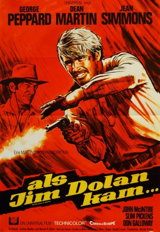

#10982 Als Jim Dolan kam
Alternativ: Rough Night in Jericho (Englischer Titel)
 
 IMDB-Wertung: 6.4 / 10
IMDB-Wertung: 6.4 / 10  Metascore: 0
Metascore: 0 
Ex-Marshal Jim Dolan (George Peppard) schlägt sich nun als Berufsspieler durchs Leben. Als er in das Städtchen Jericho kommt, macht Jim schon bald die Bekanntschaft des ehemaligen Sheriffs Flood (Dean Martin) und seiner Bande. Diese terrorisieren Jericho und seine Einwohner nach Strich und Faden. Besonders Jim's alter Freund Ben Hickman (John McIntire) und die Witwe Molly Lang (Jean Simmons) haben als Betreiber des örtlichen Postkutschenunternehmens unter den Überfällen der Banditen zu leiden, doch Dolan räumt auf in Jericho...
Jahr: 1967
Dauer: 103 Minuten
FSK: 12
Land: USA Studio: A Universal PictureTonspuren:
Untertitel:
Auflösung: 1080p (1920x816) Größe: 8949 MB
Genre: Western, Liebe
Regisseur: Arnold Laven
Drehbuch: Sydney Boehm, Marvin H. Albert, Marvin H. Albert
Soundtrack: Don Costa
Darsteller:
 Dean Martin als Alex Flood
Dean Martin als Alex Flood George Peppard als Dolan
George Peppard als Dolan Jean Simmons als Molly Lang
Jean Simmons als Molly Lang John McIntire als Ben Hickman
John McIntire als Ben Hickman Slim Pickens als Yarbrough
Slim Pickens als Yarbrough- Don Galloway als Jace
- Steve Sandor als Simms
 Army Archerd als Waiter (uncredited)
Army Archerd als Waiter (uncredited) Noble 'Kid' Chissell als Townsman (uncredited)
Noble 'Kid' Chissell als Townsman (uncredited)- Dee Cooper als Henchman (uncredited)
- Med Flory als Weaver (uncredited)
 Kenner G. Kemp als Townsman (uncredited)
Kenner G. Kemp als Townsman (uncredited) Larry D. Mann als Purley (uncredited)
Larry D. Mann als Purley (uncredited)- Dean Paul Martin als Juror (uncredited)
- Angelique Pettyjohn als Lady of the Evening (uncredited)
 Simon Prescott als Card Player (uncredited)
Simon Prescott als Card Player (uncredited)- Sydney Smith als Card Player (uncredited)
 Jack Tornek als Townsman (uncredited)
Jack Tornek als Townsman (uncredited)- Brad Weston als Torrey
- Richard O'Brien als Ryan
- Carol Andreson als Claire
- Warren Vanders als Harvey
- John Napier als McGivern
- Melvin F. Allen als Deputy (uncredited)
- Sid Barlowe als Ross (uncredited)
- Joe Benson als Townsman (uncredited)
- John Breen als Waiter (uncredited)
- Bob Burrows als Townsman (uncredited)
- Bobby Clark als Juror (uncredited)
- Robert Cole als Townsman (uncredited)
- Paul Condylis als Waiter (uncredited)
- Suzy Crosby als Hooker (uncredited)
- Vinnie De Carlo als Juror (uncredited)
- William J. Ganavally als Juror (uncredited)
- Abe Greenberg als Waiter (uncredited)
- Len Hendry als Townsman (uncredited)
- Lars Hensen als Waiter (uncredited)
- Tex Holden als Townsman (uncredited)
- Ray Kellogg als Deputy (uncredited)
- Richard Kleiner als Bartender (uncredited)
- Jim Lance als Card Player (uncredited)
- Wallace Earl Laven als Mrs. Ryan (uncredited)
- Jack Lilley als Henchman (uncredited)
- Casey MacGregor als Townsman (uncredited)
- Suzy Martin als Lady of the Evening (uncredited)
- Sydney Mason als Card Player (uncredited)
- James Meade als Dealer (uncredited)
- David Humphreys Miller als Doctor (uncredited)
- Ernesto Molinari als Townsman (uncredited)
- Leo Needham als Townsman (uncredited)
Datei: X:\HD-Western-1960-1979\Als Jim Dolan kam (1967, FSK12, 1920x816).mkv seit 16.04.2019
Festplatte: HD Eastern+Western
 Es gibt insgesamt 110 Filme in der Gruppe 'HD-Western-1960-1979'
Es gibt insgesamt 110 Filme in der Gruppe 'HD-Western-1960-1979'